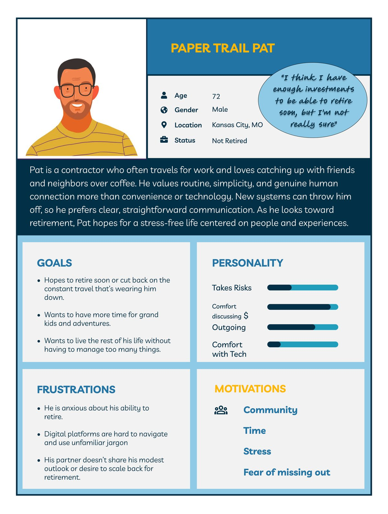
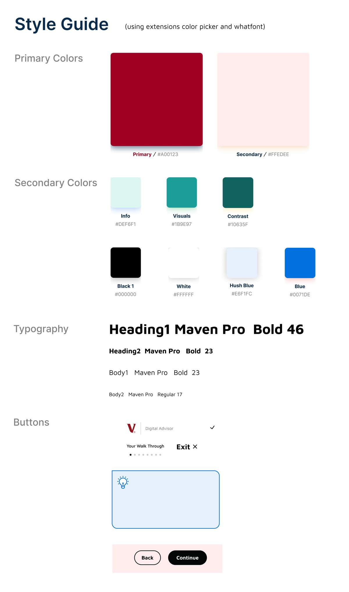
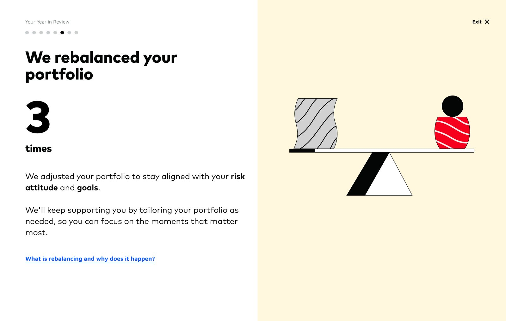
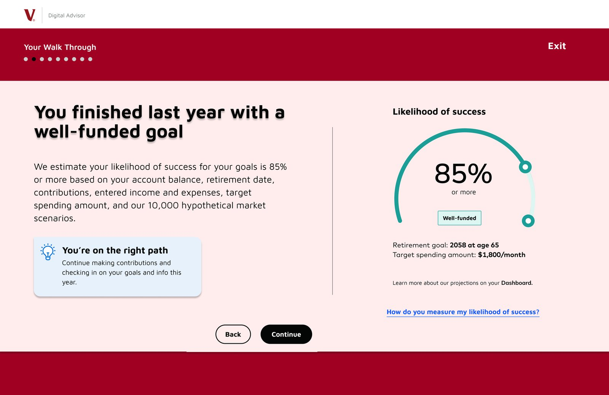
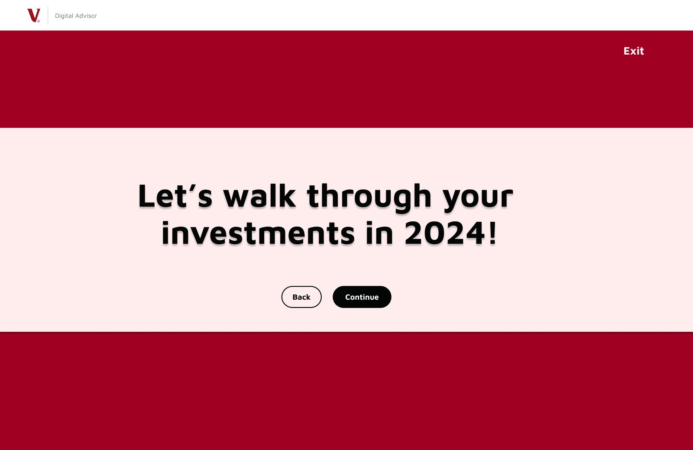

Research, as a team
Five of us worked as a team to redesign Vanguard’s Year in Review for people at or near retirement age.
We started with discovery. We read through Vanguard’s website and reports, then researched how people spend money from their fifties onward. Each of us ran one usability test of the existing experience, five tests in total, with participants over 50 from a range of backgrounds. We also did our own affinity mapping, shared our findings, and peer-reviewed each other’s work.
After that, each of us worked on our own redesign. This one is mine.

Design approach
Vanguard didn’t give us a formal style guide, so I made my own for my redesign. I based it on their existing look, their reds and pinks and most of the other elements they already used, so the walkthrough still looks like Vanguard. Then I set the walkthrough apart from the rest of the site so people know they’ve started a guided experience that’s worth finishing.




What I changed, and why
The heuristics column uses Nielsen’s 10 usability heuristics. I haven’t tested the redesign, so it shows which heuristic each change follows, not proof that it works.
| What I did | Why | Heuristic |
|---|---|---|
| Replaced the cartoons with information and more educational links | The cartoons took up half the screen, and our usability tests found them uninformative and distracting | Aesthetic and minimalist design |
| Kept the original’s graphs and pie chart as the only visuals | In our usability tests, most participants liked seeing how their money was invested and the progress they’d made that year | |
| Made the text larger | Accessibility | |
| Added more lightbulb boxes with guidance and encouragement (the original had a few), plus optional links for anyone who wants more information | Participants in our research liked both: the boxes for guidance, and the links for learning more without crowding the screen | Help and documentation |
| Put dark bars across the top and bottom of the screen, with the title front and center | Marks this as a separate, guided experience, like the start of a movie | |
| Kept the original’s progress dots | People like to know how long the experience is and where they are in it | Visibility of system status |
| Kept the exit in the top right corner of every screen | People should always have a way out, so nobody feels stuck | User control and freedom |
| Built my style guide from Vanguard’s existing look, and kept their split-screen layout | Still looks and feels like Vanguard | Consistency and standards |
| Added a thank-you page | The original never thanked customers after showing how their money was invested | |
| Renamed it a “walkthrough” | People kept stumbling over “Year in Review” when they talked about it |
The pitch
I pitched my redesign to Vanguard’s team, leading with the rename, and they responded well to it.
The other screens in the prototype are Vanguard’s existing pages, included so you can click through to mine.
View the Figma prototypeWhat I’d do next
- Test the redesign with the same kind of participants. I didn’t test it with users.
- Design a mobile version. I designed this for desktop only.
- Rebuild it with Figma components and auto layout, which I’ve learned since. I wouldn’t design anything without them now.
- Refine the visual details. This was one of my first complete designs made on my own.